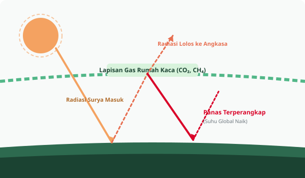
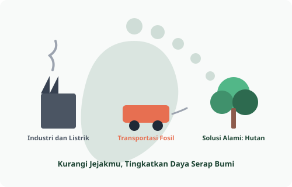

Karbon Dioksida (CO₂)
Berasal dari pembakaran batu bara, minyak bumi, deforestasi hutan tropis, dan industri semen.
Perubahan iklim bukan sekadar kenaikan suhu udara harian, melainkan pergeseran jangka panjang pada pola cuaca, temperatur, dan keseimbangan biosfer planet bumi yang dipicu oleh pelepasan emisi secara masif.
Cuaca adalah kondisi atmosfer dalam rentang waktu singkat (jam hingga hari) di wilayah tertentu, seperti hujan lokal hari ini. Sebaliknya, iklim adalah rata-rata pola cuaca dalam rentang waktu minimal 30 tahun sesuai standar Badan Meteorologi Dunia (WMO).
Ketika membahas perubahan iklim, kita membicarakan pergeseran rata-rata statistik iklim global secara permanen akibat penebalan selimut gas rumah kaca di atmosfer.

Secara alami gas rumah kaca menjaga suhu bumi tetap layak huni (+15°C). Namun konsentrasi yang berlebihan akibat pembakaran bahan bakar fosil menyebabkan panas terperangkap berlebih.
Berasal dari pembakaran batu bara, minyak bumi, deforestasi hutan tropis, dan industri semen.
Berasal dari sendawa peternakan sapi, pembusukan sampah organik di TPA, dan tambang gas bumi.
Berasal dari pemupukan kimia sintetis pertanian, pembakaran biomassa, dan limbah industri.
Gas buatan untuk bahan pendingin AC, kulkas komersial, dan pelarut industri elektronik.

Berdasarkan laporan global IPCC, berikut pembagian sektor ekonomi utama penghasil emisi gas rumah kaca di dunia:
Memahami dasar sains krisis iklim adalah fondasi awal. Langkah selanjutnya adalah mempelajari katalog tindakan praktis yang dapat kita lakukan sehari-hari.
Buka Panduan Aksi Berkelanjutan